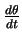
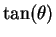
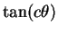
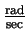
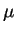
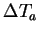
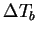
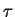
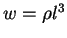

- 1.
- A rocket ship blasts off at t-0 and accelerates upward at a rate of
 .
A mile away, a news cameraman films the event
using a tripod that tilts so that he can keep the rocket in the center
of the field of view. What is the rate of change of the camera's
angle with the horizon (
.
A mile away, a news cameraman films the event
using a tripod that tilts so that he can keep the rocket in the center
of the field of view. What is the rate of change of the camera's
angle with the horizon (

)? What are the units of
your solution? Justify your answer.
The rocket ship problem is a classic one, but there is seldom much
effort placed on the units in the solution. Using elementary
calculus, one quickly finds that the height of the rocket is
The horizontal distance remains the same, and if we do a little
checking, we find that a mile is about 1609 meters. From this
information, we can find camera angle
What are the units on  ? Most would say radians, but why?
Does it really matter? When you are computing the arctangent, it does
not really matter what units are used. Most students are used to
setting the mode on their calculator output whatever units are
desired. However, when you change modes from say, radians to
degrees, you are changing functions! Essentially, your calculator
has several different versions of arctangent from which you can choose
by selecting the right mode. Another way to think about this is that
the relation
? Most would say radians, but why?
Does it really matter? When you are computing the arctangent, it does
not really matter what units are used. Most students are used to
setting the mode on their calculator output whatever units are
desired. However, when you change modes from say, radians to
degrees, you are changing functions! Essentially, your calculator
has several different versions of arctangent from which you can choose
by selecting the right mode. Another way to think about this is that
the relation
is only valid for radians. Mathematically, changing units is changing

to

where c is some conversion factor
for the new units. If you differentiate the latter function, you will
not have exactly the same relation as shown above.
Differentiating, we find that
The units are

, of course.
- 2.
- Suppose one wishes to characterize the terminal velocity of a
water droplet falling in the atmosphere. The relevant variables
would be the characteristic size of the droplet, the acceleration due
to gravity, the viscosity of the atmosphere (with units M L-1T-1) and the density of the liquid. How many dimensionless
combinations of the relevant quanitities are there? Find all
dimensionless products of these variables.
To compute all the dimensionless quantities associated with a falling
raindrop, one simply follows the procedure discussed in class.
| Feature |
variable |
units |
| Characteristic length |
l |
L |
| Gravity |
g |
L T-2 |
| Viscosity |
 |
M L-1 T-1 |
| Density |
|
M L-3 |
| Velocity |
v |
L T-1 |
Next, one checks to see for which combinations of exponents
If you do it right, you will find that
Thus, there are two dimensionless constants. Specifically, they are
Notice that the second one is the reciprocal of the Froude number
which you read about in the dinosaur article! Thus, the ratio of
kinetic to potential energy is important in this problem.
- 3.
- A rule of thumb for cooking turkeys is that one should allow 20
minutes of cooking time per pound of turkey in a 400o oven. Using
dimensional analysis, determine whether or not this is a good idea.
If you think it is a bad idea, propose a better one.
To understand the turkey problem, we follow the same
nondimensionalizing procedure as discussed in class. We assume that
the heat capacity and the density turkeys does not change with size.
There is more than one way to do this problem. For instance, you could
use the turkey's total volume or weight rather than the turkey's
characteristic size. Assuming constant density, both alternatives
would have units L3. The important thing to understand is that
turkeys are self-similar. That is, if a turkey is twice as tall as
normal, it is probably twice as wide as well.
| Feature |
variable |
units |
| Raw temperature |
 |
M T-1 L-2 |
| Cooked temperature |
 |
M T-1 L-2 |
| Thermal conductivity |
k |
L T-2 |
| Turkey characteristic size |
l |
L |
| Cooking time |
 |
T |
After doing the algebra, you should find that the only nondimensional combinations in this problem are
I am no cook, but I would say that the rule of thumb is no good
because weight is proportional to l3, not l2. Thus, if

where is the density of a turkey, see that
is a dimensionless constant, and the cooking time should not grow
linearly with weight. Rather, the cooking time should grow sublinearly with w to the 2/3 power.
- 4.
- Read the Scientific American article ``How Dinosaurs Ran'' by R.
M. Alexander. Express the principle results of the first half of the
article (summarized in the graph on page 132) in terms of Buckingham's
 Theorem. Suppose you did not have access to the data in this
graph, but you hypothesize that the only relevant variables for
quadrupedal animals are speed
v, stride length s, hip height l and gravity g. Use whatever
resources you can to determine the functional relationship between the
dimensionless parameters. (In other words, find animals representing
data points with different dimensionless values. Otherwise, your
graph will collapse to a point!)
Theorem. Suppose you did not have access to the data in this
graph, but you hypothesize that the only relevant variables for
quadrupedal animals are speed
v, stride length s, hip height l and gravity g. Use whatever
resources you can to determine the functional relationship between the
dimensionless parameters. (In other words, find animals representing
data points with different dimensionless values. Otherwise, your
graph will collapse to a point!)
Buckingham's Theorem rounds up all the dimensionless
combinations pretty quickly to reproduce the Froude number and the
ratio of stride length to hip height as the author suggests.
Furthermore, Buckingham's Theorem also asserts that this is an
exhaustive list.
I was a little disappointed (and incredulous) that no one was able to
acquire much data for this problem. I am still curious whether or not
one can reproduce the functional relationship demonstrated in the problem.